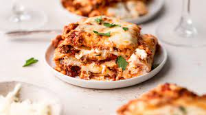

Lasagna!

This is the recipe for fat cat Garfield's favorite dish!
The main step you need to follow is to boile the pasta! Once the pasta is soft, you can also buy beef if that is your thing.
Get a tray type of thing and lay each ingredient over each other in the pan. Then top it with cheese. Final step is to bake for a while! :)
Ingredients
- pasta
- seasonings
- cheese
- meat sauce
Steps!
- boil da pasta!
- ?
- profit
- enjoy!
Disclaimer, I have never eaten or tried lasagna and the steps I have given are based on imagination of a man child. Follow at your own risk!